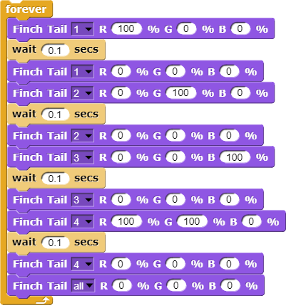

The Finch 2.0 Robot
COR 100.09 Game & Robotics Programming Fall 2023
Installation details
- Installation details (already completed for classroom use):
- Full charge lasts ca. 8 hrs and takes 8 hrs to charge. Green lights when turning it on indicate the charging state (4 lights = full).
- Update the firmware with a
.hexfile for the micro:bit every 6 months or so (get the file from here). The micro:bit does not have an operating system but it has MicroPython. - Once uploaded, the micro:bit responds directly by giving three letters (DAT - "Deluxe Apricot Tyrannosaurus") followed by pound # sign and its number, e.g. FNC3929.
Change the turtle with the Finch Costume: download this file and
importit to Snap!: tinyurl.com/finchCostume- Try moving the Finch after connecting to it (don't let it go):
- If you're interested: there are 14 additional programming videos.
Moving and turning
- Move forward 10 cm at 25% full speed, then backward by 20 cm at full speed:
- Turn right by 20 degrees at 50% full speed, then left by 90 degrees at 75% full speed:
- Repeat the turning motion 5 times:
Practice:
- Make the Finch move in a square, then play a sound.
- Put this program into a
MotionblockFinch square:- In the
Motionmenu,Make a block - Inside the block, add the code below
- Click OK
- Drag the new block
Squarein the script editor - Run it (make sure the Finch is safe to move)
- In the
Controlling wheels
- For a counter-clockwise spinning motion, make the left wheel go backward and the right wheel go forward:
- For a clockwise spinning motion, make the right wheel go backward and the left wheel go forward:
- To stop, use the "Finch Stop" block or the red STOP editor button:
- To make the Finch move around in a circle, make the wheels go at different speeds while moving forward:
Drawing shapes with the pen mount
- Draw a right triangle (use Pythagoras to compute the length of the
hypothenuse):

- Drawing shapes activity:
- decomposition (drawing the triangle step by step)
- evaluation (testing to see if you got what you wanted)
Practice: Drawing a spiral
When the Finch's two motors move at the same speed, it moves in a straight line. When they move at different speeds, it moves in a circle. The following script works more or less - not quite sure about the
speedvalues - but it produces a spiral.An alternative is to use the move + turn commands - this script draws a spiral for the turtle:
This will produce a spiral:
Finch LEDs
- Red, blue and green are the primary colors of (white) light.
Turning the Finch's beak red, green then blue forever:
Why do blue and green make yellow?
The combination of red and green to make yellow can be explained in the context of additive color mixing, which is the way colors of light combine. This is the method used by digital displays like computer monitors, televisions, and projector screens.
In the additive color model, the primary colors are red, green, and blue. When red light and green light combine, they create yellow light. This may seem counterintuitive if you're used to the subtractive color model (like mixing paints), where red and yellow make orange.
The reason this happens has to do with how our eyes perceive color. We have three types of color receptors, or cones, in our eyes that are sensitive to short (blue), medium (green), and long (red) wavelengths of light. When we see yellow, it's usually because an object is reflecting both red and green light to our eyes, stimulating both the long and medium wavelength cones. Our brains interpret this combination as the color yellow.
So, when a screen wants to create the perception of yellow, it emits both red and green light. Our eyes see this combination of red and green light, and our brain interprets it as yellow.
- Create an LED disco effect (see video): make LEDs 1,2,3,4 (from the right)
Solution code:

You get white light by mixing all colors with the same weight - the lower the number the fainter the light: try setting it to 1%
How does a prism work?
As sunlight (white light) enters a prism, its components travel with different speeds (wavelengths) leading to refraction - as it exits, it is dispersed - cp. Snell's law, which describes the relationship between the angles of incidence and refraction for light or other waves passing between two different isotropic media (e.g. water, glass, air where no direction is privileged over another).
- Challenge:
- Make every LED in tail and beak show a different color
- Turn all LED's white at the same time
- Make them blink off/on three times before turning all of them off.
Solution code:
Or with a "blink N times" Finch block:
- Activity: "Finch parade" - turn a Finch in a parade float using Lego bricks, blinking lights and movement mixes.
- Computational thinking:
- algorithm = order of things
- decomposition = parallel blocks
- evaluation = match goal to result
Finch sounds
There is only one Finch-specific sound command:
The notes corresponds to a MIDI keyboard:
A MIDI (Musical Instrument Digital Interface) keyboard is an electronic instrument that sends MIDI signals to other devices like computers, synthesizers, or drum machines. It doesn't produce sound itself but triggers sounds stored in digital devices. MIDI keyboards come in different sizes, can have additional control features like pads and knobs, and usually connect via USB or MIDI cables. They are essential tools for digital music production and performance.
- Practice: create the 'Frere Jacques' with disco lights (for a video, see: tinyurl.com/frereJacquesDisco) - lyrics are here: tinyurl.com/BrotherJack.
Solution (cloud file):
- Challenge: make the Finch play the song and dance to it. Here is a fancy example, the "Finch chorus line" - https://youtu.be/qouVW_oVDPs
Sensors: distance, lights, lines (numeric)
- Finch sensors include: light, line, distance, buttons A/B, accelerometer, compass, temperature, orientation, and sound.
- The Finch can measure DISTANCE using the two sensors in front - click on this command to get the current reading:
- To continuously update the distance reading, use the output as the
string in a
saycommand and wrap it in aforeverloop: - Data gathering mission: use the other blocks inside this code.
- Sensor overview video on the Snap/sensor programming page - especially for registering the minimum/maximum values.
- PRACTICE: use the value of the light sensor as a dimmer for LED where the LED gets brighter in proportion to increasing light falling on one of the sensors.
- Write a script that turns the beak BLUE when the left, and RED when the right light sensor are covered.
- Solution:
- PRACTICE: Modify the script to include that the beak goes GREEN when BOTH light sensors are covered.
- Solution:
Sensors: buttons, orientation (Boolean)
- Practice: write a script that shows a button "A" whenever the left A-button of the Finch is pressed, and a button "B" whenever the right B-button of the Finch is pressed.
- Solution:
- Practice: write a script that plays the different sounds of a scale depending on the orientation of the Finch's beak, and try to play "Frère Jacques" with the Finch.
- Solution: the playing reminds me of the "bamboo Katana challenge" in "Ghost of Tsushima":